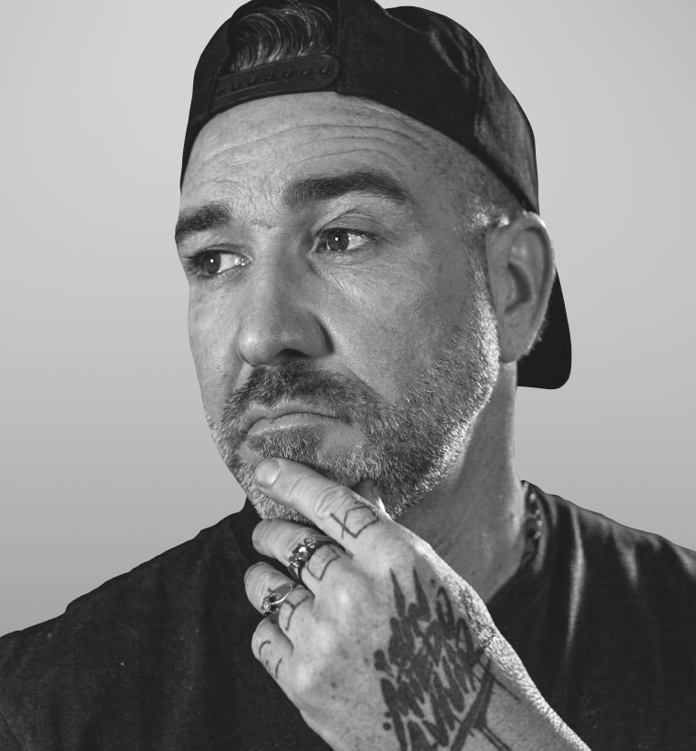

SFDK Siempre fuertes de Konciencia
El grupo de hip hop de raices sevillanas más conocido hasta el momento. Formado por Zatu y Acción Sánchez en 1994. SFDK se forma cómo grupo en el año 1993 dando paso a lo que sería la nueva escuela sevillana de rap.
Óscar 'Acción' Sánchez y Saturnino Rey 'Zatu' Rey no se entienden el uno sin el otro. Su ensamblaje se basa en ritmos y versos. Este matrimonio musical, con más de 30 años subidos a los escenarios, son uno de los principales grupos de rap, no solo de España, sino de los países de habla hispana. Desde que sacaron su primer disco, Siempre Fuertes, hace 30 años, este dúo sevillano ha recorrido medio planeta llevando el rap español a lo más alto.
El gran dúo originario del humilde barrio de Pino Montano ahn demostrado a lo largo de su carrera que son más que profetas en su tierra hispalense. Son la cultura de la calle.
Integrantes
Saturnino Rey
Más conocido como «Zatu» o «El Ingeniero». Rapero pionero en su país.
En 2005, "El Niño Güey" ganó la Red Bull Batalla de los Gallos Nacional.
Óscar Sánchez

Más conocido como Acción Sánchez es un DJ y productor del grupo sevillano SFDK. Comenzó a explorar los platos y las mesas de mezclas a principios de los años 90.
En 1997, grabó con SFDK su primer trabajo en formato profesional.
Mayores éxitos
Discografía a destacar
| Álbum | Año de publicación | Canción destacada |
|---|---|---|
| Siempre Fuertes | 1999 | El ingeniero |
| Odisea en el lodo | 2003 | El liricista en el tejado |
| 2005 | 2005 | La habitación que más me gusta de mi keli |